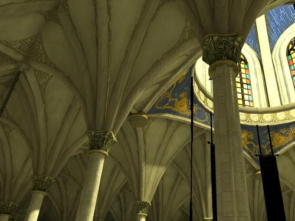
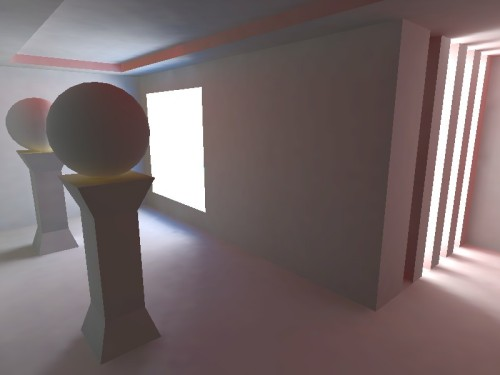
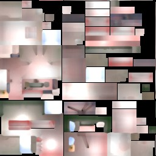
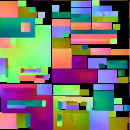

- Generated by
 1.9.7
1.9.7
|
LightsprintSDK 2021.08.08
|
Following projects use LightsprintCore library for off-line rendering.
They are located in samples directory in the SDK, binaries in bin.
When processing foo/bar.3ds scene, results are saved to foo/bar_precalculated directory by default.
LightSpeed
BuildLightmaps

builds standard and directional lightmaps |

ambient occlusion, bent normals... |
CPULightmaps

computed lightmap |

computed bent normal map |